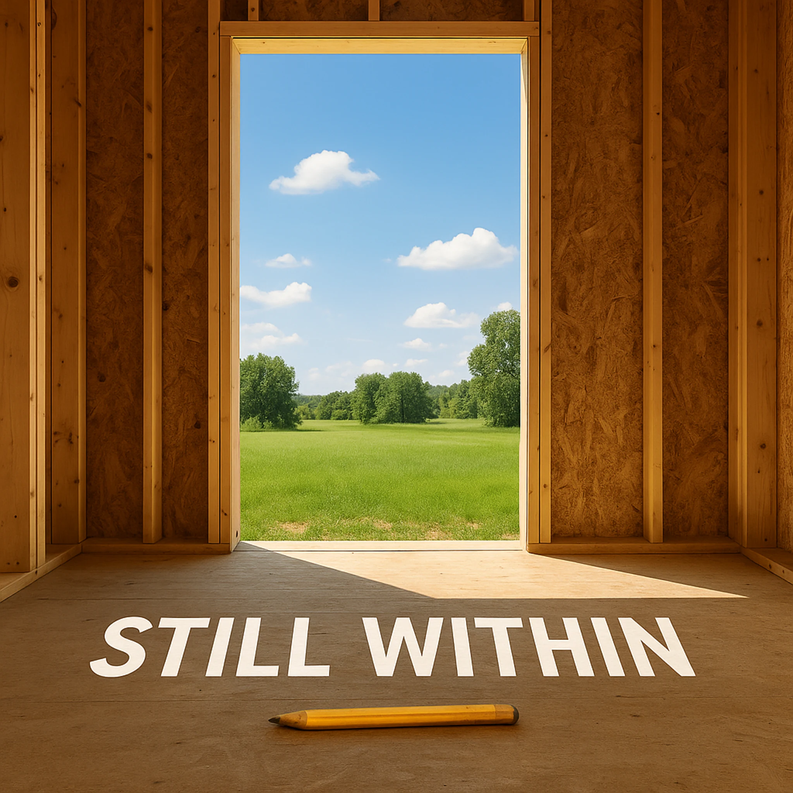

Still Within*

Want to download this song? Return to the Songs page, add this song to your playlist, then open My Playlist. Select the song and choose Download Song to review the Free Use agreement.
Lyrics
Verse 1
I open my mouth, but the word slips away,
It lingers like mist at the edge of the day.
The thought was right here, it was mine to hold,
Now it drifts off, as if it was already told.
Chorus
I know I’m losing it, piece by piece,
Threads of my memory pulled by disease.
It’s a cruel kind of knowing, a slow retreat,
I’m losing it. I know it, but I’m still complete.
Verse 2
The logic turns fuzzy, the numbers don’t stay,
I ask myself why, then the thought slips away.
I start something simple, forget halfway through,
I know what I’m losing, I know what I knew.
Chorus
I know I’m losing it, piece by piece,
Threads of my memory pulled by disease.
It’s a cruel kind of knowing, a slow retreat,
I’m losing it. I know it, but I’m still complete.
Verse 3
I’d join the conversation, but my words jumble up,
When one word seems lost, I find it when I wake up.
Don't want them to see, they need to remember me
So I smile — and keep searching my memory.
Chorus
I know I’m losing it, piece by piece,
Threads of my memory pulled by disease.
It’s a cruel kind of knowing, a slow retreat,
I’m losing it. I know it, but I’m still complete.
Verse 4
Then the next minute, everything is alright,
The fog lifts away and the day feels bright.
A laugh finds its place, and the world feels at ease,
For the moment I’m back, I’m better by degrees.
Bridge (closing)
How long will this last, how long will I still know?
I see it in their faces, but I know that although
I am mentally clumsy, their love won’t wear thin.
I might fade a bit — but they know I’m still within.
Devotional
Still Within
Isaiah 46:4 (KJV)
“And even to your old age I am he; and even to hoar hairs will I carry you: I have made, and I will bear; even I will carry, and will deliver you.”
The Story Behind the Song
Still Within began with something small and familiar: those momentary lapses when a word disappears, a thought slips away, or something once easily remembered suddenly becomes difficult to retrieve.
As I grow older, I've become increasingly conscious of those moments. Most are brief. The word returns, the thought reappears, and life continues. But sometimes they leave behind an unsettling question: What if one day it doesn't come back?
That question carries particular weight because someone I loved lived with Alzheimer's disease. I had witnessed what the disease could take from a person, and from those who love them.
But something unexpected happened when I first heard the completed song. I had written the words while considering my own experiences and fears. Yet as I listened, I heard them differently. It was almost as though that loved one were speaking them.
Suddenly, the song wasn't simply about what it might feel like to lose one's memory. It was about the person living behind that loss.
“I know what I’m losing, I know what I knew.”
I cannot know exactly what another person experienced within their own mind. But the song gave me a way to consider something I could never fully see: the struggle of someone whose thoughts and words no longer cooperate as they once did.
The Person Within
We often recognize people through what they do, what they remember, what they say, and how they respond to us.
When those abilities change, our relationships can become painfully difficult. Familiar conversations may disappear. Recognition may become uncertain. Even simple expressions of affection may no longer be returned in ways we understand.
Yet Scripture reminds us that our value rests on something more enduring than our abilities.
In Isaiah 46:4, God promises His care even into old age. The One who made us is also the One who carries us.
Psalm 139:13–16 speaks of God's intimate knowledge of us, even before our birth. He knows us more completely than anyone else ever could.
Romans 8:38–39 reminds us that nothing can separate those who belong to Christ from the love of God in Him.
Our memories may falter. Our words may fail. Our ability to communicate may diminish. But God's knowledge of us does not depend upon our ability to remember Him, explain ourselves, or demonstrate what we once could do.
Still Complete
The chorus contains the words: “I’m losing it. I know it, but I’m still complete.”
Those words are not a denial of loss. They acknowledge it plainly. But they also distinguish between losing an ability and losing one's worth.
I think of someone I loved when I hear them. And I think of those who sit beside someone they love, searching for a familiar expression, a remembered name, or a moment of recognition.
Perhaps they need reminding, too, that love can continue even when communication becomes difficult.
The song closes with a quiet hope: “I might fade a bit — but they know I’m still within.”
What a comfort to know that, even when human understanding falters, God's knowledge of His children remains sure. He knows the person within. He always has.
Prayer
Heavenly Father, thank You for knowing us completely, even when we struggle to understand ourselves. Be near to those whose memories are fading, whose thoughts are confused, or whose words are difficult to find. Give patience, tenderness, and strength to those who love and care for them. Help us recognize the dignity of every person, regardless of what they can remember, communicate, or accomplish. And when we face uncertainty about our own minds and bodies, remind us that Your faithfulness does not diminish with our abilities. Thank You for carrying us through every season of life. In Jesus’ name, Amen.